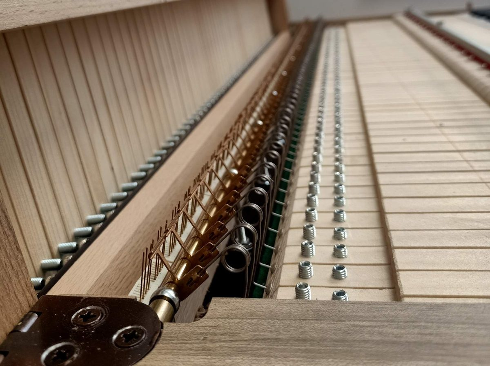
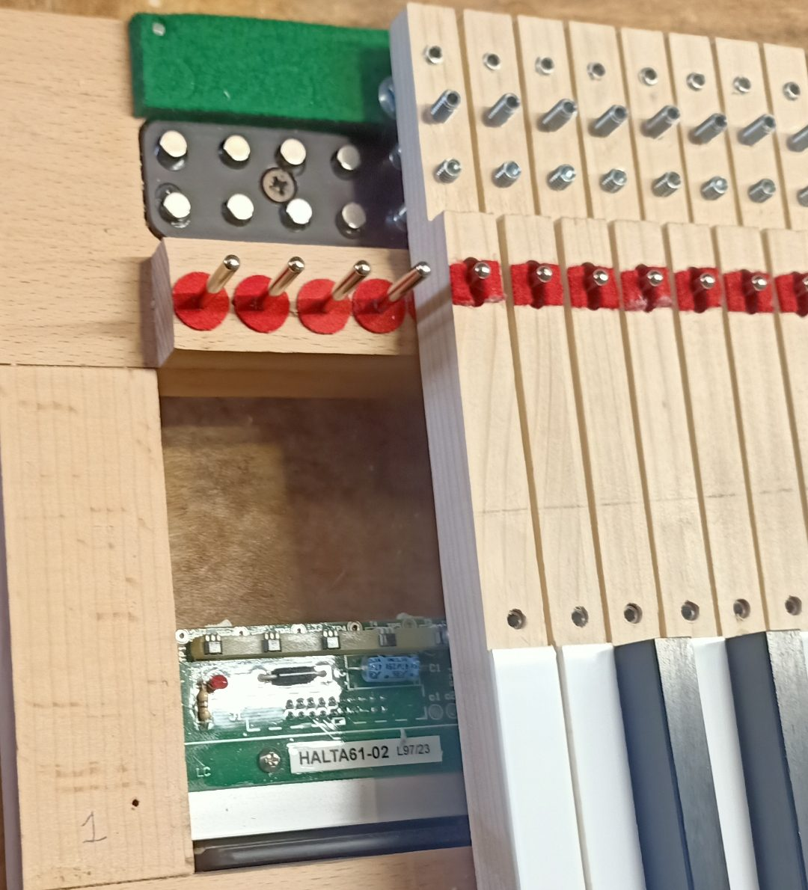

Tastiere complete di magneti, molle per il movimento e dotazioni elettriche, come sensori o contatti, predisposte per il collegamento ai centralini elettronici degli organi.
Installiamo sulle tastiere esistenti o sui nostri modelli i sistemi di molle DAMINATO per la ripetizione del tasto. Sul tasto applichiamo anche un sistema di magneti regolabili, che permette di regolarne il peso.
L'installazione prevede anche il montaggio di sistemi di contatti, sempre DAMINATO, o di sensori della ELTEC o di TERMISOUND, per poter collegare la tastiera ai centralini elettronici.
In alternativa alle molle produciamo anche le nostre tastiere più compatte, modello MARTA. Per la ripetizione del tasto prevedono solo un sistema di magneti, che consente di smontare il tasto dal telaio senza doverlo svincolare dalla molla.
Tutte queste tastiere possono essere realizzate con le essenze e le coperture richieste dal cliente (plexiglass, PVC, Corian, osso, ebano, bosso o altre essenze).

